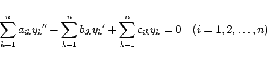

Inhalt Index DeskTop Bronstein

 Differentialgleichungen Gewöhnliche Differentialgleichungen Differentialgleichungen höherer Ordnung und Systeme von Differentialgleichungen Systeme linearer Differentialgleichungen mit konstanten Koeffizienten
Differentialgleichungen Gewöhnliche Differentialgleichungen Differentialgleichungen höherer Ordnung und Systeme von Differentialgleichungen Systeme linearer Differentialgleichungen mit konstanten Koeffizienten


Die angeführten Methoden können auch auf Systeme linearer Differentialgleichungen höherer Ordnung übertragen werden. Für das System
|  | (9.48) |
können insbesondere auch partikuläre Lösungen der Form yi=Aierix bestimmt werden. Dazu sind die ri aus der charakteristischen Gleichung und die Ai aus den zugehörigen linearen homogenen algebraischen Gleichungen zu ermitteln.